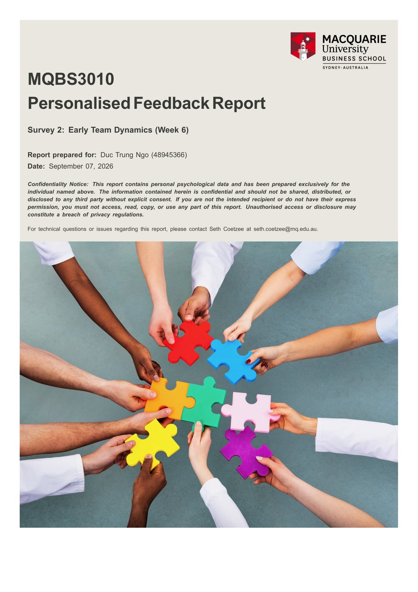

Who I am and what drives me
I started university in Ho Chi Minh City and moved to Sydney to finish my degree at Macquarie. Studying in two countries taught me to adapt quickly and to work with people who see things differently from me.
The rhythm of numbers suits me.
I've always been good at maths, and finance and analytics just match the way I think. Numbers have a rhythm to them: patterns, logic, and a story underneath. Finding that story is the part of the work I enjoy most.
People first, then the numbers.
My capstone changed how I think about analytics. Our model showed the heritage site would struggle to make a profit. We were tempted to push visitor numbers higher to fix that, but it would have damaged the place we were meant to protect. My view now is that for projects like this the people matter more than the numbers. They need a team who cares about the place enough to protect it. I want my analysis to help projects do good, not just look good on a spreadsheet.
How I see myself
I don't rely only on my own opinion of myself. In MQBS3010 I completed two teamwork surveys, in Week 2 and Week 6, run by the School of Psychological Sciences. They gave me an honest picture.
- High resilience: I keep going when a task gets hard.
- Strong emotion regulation: I stay calm in a team under pressure.
- High emotional intelligence: I notice how others are feeling.
- Anxiety under pressure. Deadlines can make me tense, so I'm learning to break big tasks into small steps.
- Trusting slowly. I can be cautious with new teammates, so I start conversations earlier instead of waiting.
- Too technical. I wrote for analysts when the client needed plain language. Now I check who will read it before I start.

A lesson I learned the hard way
When the Agility Challenge started, our team had a blank page and no data, and we froze. I was one of the people who stayed quiet in the first meeting, waiting for someone else to set the direction.
The Board Member and Advisor who spoke in Week 5 said that real decisions need speed under ambiguity, not waiting for perfect information. That described exactly what we had done wrong.
Now I try to speak first, even if my idea is rough. A rough start gives the team something to improve, and silence gives them nothing.
The People Partner at Canva advised in Week 3 that teams should share how each person likes to work before assigning roles. Our team did this, and leadership grew from people's real strengths rather than being handed out on day one.
Where I'm heading
I want to learn how many businesses work from the inside at McKinsey, then bring that experience into one company and lead its finance decisions.